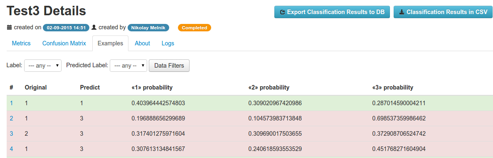
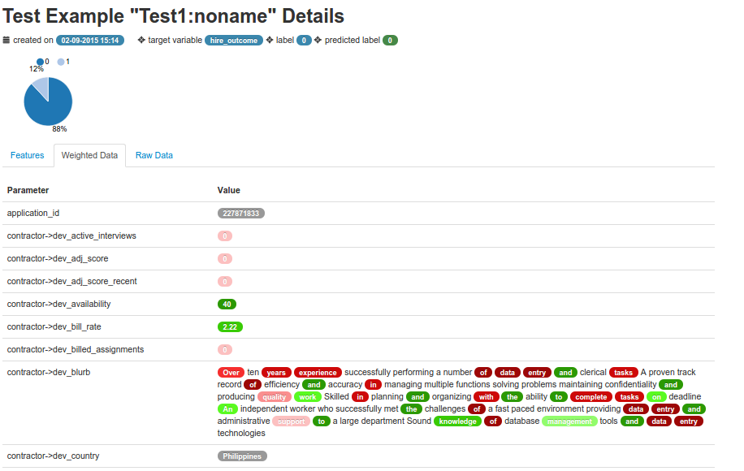

Analyzing Test Examples¶
Listing Test Examples¶
After test would be completed, all data rows used for testing, called Test Examples stored in the database. To view them you need to navigate to the Examples tab in the Test details page:
In the examples table there are following columns:
- Original - value of the target variable in the original dataset’s row
- Predict - value of the target variable, predicted using trained model
- <<class>> probability - probabilities of each class, predicted using the trained model
Note
Correctly predicted test examples are with green background, mistakenly - with red.
Text Example Details¶
You could open details page by clicking to any test example in the list tab.
There are following tabs:
- Features - table of the features, weights and vectorized values
- Weighted Data - list of features with it’s weight
- Raw Data - raw data that was used for predicting target variable, when the test was runned.
Features tab¶
There are a table with following columns:
- Name - name of the feature (is same to the model’s feature name)
- Model Weight - weight of this feature in the trained model (very often it would be a model’s feature coef)
- Vectorized Value - the vectorized value of the feature, that is passed to the model to predict a probabilities of the target variable. It isn’t a real value, this one could be found in Weighted Data tab.
- Weight - feature’s value weight, calculated as:
weight = valuevectorized*weightmodel
Weighted Data¶
On this tab shows a list of the features, their values with weights. Red/green colors used to show which features have negative/positive weight.
It could be useful, when analyzing test example with text fields - significant words of this feature will be displayed with it’s weight.
When hover the mouse to the value, there are information about model weight, vectorized value and weight in the tooltip.